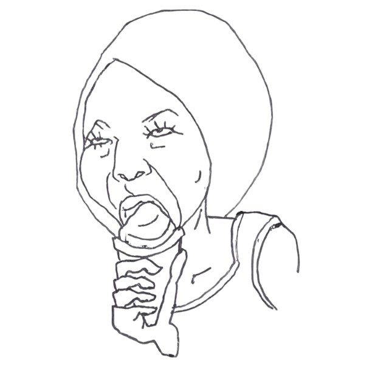
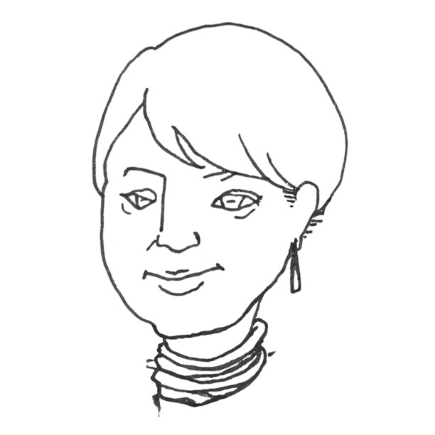

自己
紹介
はじめまして、GUsSO(グッソ)と申します。
似顔絵を描くのが好きで、色んなタッチであらゆる「好きな人」を描いています。
ここでは趣味で描いた似顔絵とはなまえを紹介しています。

タイトルの「似顔絵棚」は、最初、図書館にしようかなとしたけど図書館はジャンルが多いと思って。
お家の本棚ぐらいの規模がいいぐらいだと、本棚からのインスパイアで「似顔絵棚」にしてみました。

沖縄のファストフード店Jefが好きすぎてフォトウェディングをJefで撮ったほど。
チョコミントが好きで夏はコンビニはしごします。
実家の琉球犬2頭がかわいくて好きです。白とぅらと茶とぅらの女の子。
ショートヘア歴が長すぎて誰よりもショートヘアが似合うと自負してます。
夫がなんだかんだすき。

地元の音訳ボランティアサークルに入って活動しています。